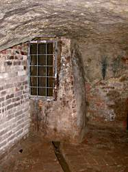

| In Deutsch |
| In Deutsch |
Water Supply and Sewage Systems
Today every city has a water supply and a sewage system, transporting fresh water into any house, and used water from houses and factories to the purification plant. In less environment friendly countries, the sewage is sometimes conducted into the next river or the sea. And this system of water tubes is typically, you guessed it: underground.
Many cities have sewage systems which are big enough to walk through. If a city is big enough, there is need for such big tubes, to transport the sewage water, at least for the main lines. During heavy rains the amount of sewage water my rise a hundred times, because of rain water collected by the sewage system. And it is easier to maintain the tubes, if its possible to walk inside and remove jams or repair damages.
Of course, the inside of a sewage system does not smell like Chanel No 5. And so it is very unlikely to become a tourist attraction. So showcaves.com lists only one sewage system at all. It is the only one we know of with regular guided tours.
|  |
| Image: A part of the water collecting system. A small ditch in the floor leads the Water to the collecting cistern. |
Fresh water passages are much rarer. Modern water supply uses rather small tubes, and the water has a certain pressure, transporting it up into upper floors of houses.
But historic water supplies used a different physical principle as there was no knowledge, how to build pressure lines. Canals were built, which had a constant downgrade. The main problem was to overcome valleys and mountains. The Romans were the first who built huge aquaeducts across valleys and tunnels through hills.
This kind of water transport is still very common all over the world. But it is more common in third world countries and for special uses: water for irrigation is often transported this way. Famous irrigation systems exist in Israel as well as in Switzerland, on Madeira and on Hawai'i.
Although irrigation systems with tunnels areinteresting for showcaves.com, Roman and medieval water supply systems are common tourist attractions.
And medieval water supply system often combine the transport of the water with the collection. Built into water containing sandstone layers, the passages collect fresh water and this water is an important strategic factor for a medieval town. The water warden is an important person and the location of the tunnels is top secret.
 Underground Vienna
Underground Vienna Search Google for "Water Supply"
Search Google for "Water Supply" The History of Sanitary Sewers
(visited: 20-MAY-2011)
The History of Sanitary Sewers
(visited: 20-MAY-2011)